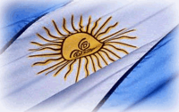
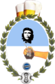
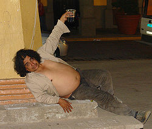
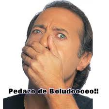

Regionalismos Argentinos
 De: La Frikipedia, la enciclopedia extremadamente seria.
De: La Frikipedia, la enciclopedia extremadamente seria.
| De la serie Diccionarios frikipédicos:
|
| Regionalismos Argentinos
|
| 
|
Oíd negros narizones mortales las aberraciones que le hemos hecho a vuestro idioma
|
|
| Descripción del Diccionario:
|
Agítese antes de usar. Venta bajo receta
|
| Total de palabras (por cientos):
|
Más de mil (esto es sólo una muestra gratis)
|
| Encargado:
|
Genericool
|
| Num. de colaboradores:
|
Los drogones del Portal de Argentina
|
| Notas:
|
Mientras leías esto un chorro te afanó la guita
|
ADVERTENCIAEsto no es j%*a, viteh
No nos hacemos responsables de tus pertenencias de valor (las que te acaban de robar y las que te robarán mientras seguís leyendo).
Usá este diccionario con precaución y en caso de intoxicación llamá al 0800-Mapa-de-la-inseguridad, opción 1, de lunes a viernes de 0:00 a 0:05 hs. Si te atiende una mina que se llama Ramón y te pregunta por mí, decíle que no me viste.
Si tu mamá te pilla leyendo esto, la cagaste. Si te pilla leyendo Playboy, también la cagaste, pero no tanto.
|
Numeros
- uno-dos: Penetracion chechual. Se le dice asi al ritmo que uno aplica cuando tiene relaciones carnales con alguien del sexo opuesto.
- 69: Pose del antiquisimo libro "the kamasutra" (pq se hace en la cama) en la cual te acuestas sobre tu pareja, amante, hueso,chongo o el fulano en cuestion de manera que tu le hagas un PT y el te haga un cunilingus, anilingus o ambas.
A
 Lechón adobado en pleno auge
- abatatarse: Asustarse (generalmente incluye pánico y bloqueo mental).
- abombado: Persona que no sabe ni dónde está su nariz.
- adobado: Persona que ha bebido suficiente alcohol como para reeditar la muerte de Bon Scott.
- acostar: Perjudicar a otra persona.
- acovachado: refugiado,escondido.
- afanar: Tomar prestado algo sin pedirlo y sin devolverlo.
- afrancesado: Ser que actúa como un afeminado, o sea un francés unitario. NO es sinónimo de gay, por ejemplo, Jorge Telerman no es gay, es afrancesado.
- aguantar: se usa para decirle a tu amigo que te espereen la esquina mientras te haces una rapidita. Tambien se usa tener aguante (que te la meta mandingo hasta el fondo) o aguante(cuando la enfermera te clava una aguja en tu parte trasera)
- aguilas: presos que acechan a los homosexuales
- ahijuna: Expresión que sirve para enfatizar algo (ideal para cuando no te creen que
pescaste un tiburón en la laguna de Chascomús).
- amansaburro: Persona (generalmente femenina) a la que le gusta manipular miembros
viriles ajenos de forma errática. También puede servir como sinónimo de mataburros.

El de adelante es un arruina guachos y el de atrás es un amargo cara larga
- amarrete: Tacaño, avaro, mezquino, miserable, que escatima los gastos hasta el punto de despertar en los demás rechazo o vergüenza ajena (cualquier parecido con IP anónima es pura casualidad).
- amigo: Sos vos cuando te quieren pedir algo o robarte.
- amotinarse: es cuando un grupito de presos se rebelan frente a los guardias.
- anaconda: órgano reproductor masculino.
- andres: La tan odiada menstruación femenina o también: la marea roja
- antena: Organo que sirve para captar sonidos y en el caso del príncipe Carlos
también la señal de 527 canales de televisión y 1.024 estaciones de radio.
- antichorro: Persona que esta en contra de los delincuentes.
- aplicar mafia: Acción de intimidar a una persona ya sea mediante palabras o con
acciones violentas.
- arrecho Persona con un inmenso potencial sexual no liberado. El típico
frikipedista Wikipedista
- argoya: 1. Órgano sexual femenino externo: Este detergente no sabes como me deja la argolla. 2.Anillo de Bodas: Mira ese infeliz, ya lo condenaron con la argoya.
- arruina guacho: Persona que lastima o deja invalida a otra. Tambien se lo llama paco.
- artesano: Persona que tiene un estilo único e infalible para levantar minas.
- asado: Acción y efecto de cocinar a las brasas carne, chorizo, morcilla y otros elementos bastardos produciendo la mayor cantidad de humo posible.
- atenti: Palabra prestada del italiano que significa atento: Atenti que te la van a poner.
- atorranta: Mujer de bajísimas pretensiones a la hora de elegir con quién tener relaciones sexuales (no tan bajas como para hacerlo con un friki).
- autito: Preso homosexual.
- ayudin: Ayuda extra por medio de estupefacientes.
- azul: 1. Policía, servidor de la ley. 2. miembro de ultraderecha: El presidente Perón era un azul.
B
- bacano: 1. algo bien hecho y con esfuerzo: Esta obra es rechabacano. 2. De mucho dinero o alta burguesía: Este es un barrio bacán donde no existen los negros como vos.
- bagarto: Dícese de la mujer más que muy fea. Ej.: Yenifer Lópes es un bagarto mal.
- bagayo: Mujer fea como una maldición de gitano. No se han reportado casos autóctonos en Argentina.
- bagayero: Persona a la que le atraen mujeres feas.
- bancar: 1. Apoyar, sustentar: Bancar la Frikipedia. 2. Aguantar, soportar un martirio: Vos te vas de j%*a y yo me tengo que bancar a este pendejo insoportable.
- baja cancha: Invitación a pelear.
- bajon: Situación difícil, hambre(aparece luego de consumir marihuana).
- baranda: Tufillo ocasionado por falta de higiene, putrefacción o acumulación de
bacterias.
- bardear: Hacer líos, insultar.
- bardo: Problema: Rescatate pancho que va a haber bardo.
- baqueteado: persona u objeto muy usado o gastado.
- barrabrava: Barra que le pega a todos por bravos.
- basuco: Nombre dado al derivado de la cocaína que te deja más duro que una
piedra.
- batidora: Patrullero, mujer por demás promiscua.
- berreta: Calidad de los artículos comprados en La Salada.
- bigote: policia o "la yuta"
- birra: Palabra prestada
robada del tano que significa cerveza: Dale
bancate una birra pa los amigos
- blandengue: 1.Policía colonial que detenía los contrabandistas. 2.
Forma vulgar de llamar a los agentes anti-narcóticos de la metropolitana: Fumala rápido que ahí
vienen los blandengues.
- bochorno: 1.Algo mal hecho: Esta vereda es un bochorno . 2. Algo
vergonzoso: Esta quita de subsidios a los barrios privados es un bochorno.
- bolas llenas: Dícese de la oración dicha por alguien al cual se molesta
demasiado: Deja de j%*erme, me tenes las bolas llenas.
- bolas tristes: Dícese de alguien cabiz bajo con las pelotas por el suelo debido a una depresión.
- boletear:
mandar a alguien bajo tierra con tus propias manitos Matar.
- boliguayo: Resultado de la mezcla de ADN boliviano y paraguayo. Generalmente se los puede hallar en la hinchada de Boca.
- bolita: Hermano de la vecina República de Bolivia.
- boludo: 1. Hombre al que le pesan los testículos. 2. Torpe, inútil,
tarado. 3. Adjetivo para referirse a cualquier persona: Che boludo, ¿cómo andás?
- bondi: Arma de destrucción masiva que sirve para trasladar personas de un lugar a
otro, similar a un autobús pero conducido por pilotos de F1 reprimidos.
- boquear: Abrir la boca y revelar información.
información que podría poner tu hermoso culito en riesgo
- boquetero: Persona que se dedica a la realización de perforaciones en paredes con
el objeto de ingresar a lugares cerrados para sustraer bienes de valor.
- borrarse: Desaparecer de la faz de la tierra por motivos desconocidos.
- bostero: Dícese del ser mugriento que hincha por Boca.
- botinera: Parte femenina de la relación simbiótica entre una modelo y un jugador de fútbol, donde la primera obtiene fama al módico precio de satisfacción sexual para el futbolista.
- brillo: Azucar.
drogas como la cocaina
- bufarra: Hijoputa que gusta de violar varones menores: Cayó la Fundación Padre Bufarra.
- buitre: Ser que acecha o mete manija desde las alturas como un carroñero: Ese buitre se quiere garchar a tu hermana/o (en caso de ser homosexual).
- busarda: Abdomen que ha sufrido los embates del consumo de cerveza, asado y/o/u (ae ae) otras sustancias anti-adelgazantes.
- buraco: Agujero.
- burra: Retaguardia femenina.
- butifarra: 1.Salamin adornado con especias. 2.Miembro carnoso y blando despectivo de los hombres: Es dura la vida religiosa hijo pues aca te viene una butifarra.
C
- cabarute: Lugar al que se va por las noches a pagar por algo de entretenimiento. Al ir allí se corre el riesgo de conseguir ladillas o enfermedades venéreas (Cabaré).
- cabeza de tortuga: Integrante de la guardia de infantería de la policía federal.
- cacerolazo: Protesta callejera animada por una orquesta de utensilios de cocina.
- cagada: 1. Un error feo: Me mandé una cagada. 2. Cualquier cosa que te fastidie: La nueva Ley de Tránsito es una cagada.
- cagar: 1. Defecar. 2: j#@** a alguien de cualquier forma: Te re cagué en el partido de basquet.
- cajetilla: Cheto (pijos en España)
- calentón: Pelotudo que se enoja fácilmente.
- cana: 1. Forma semi-delictiva de referirse a la Policía, no apta para denunciar hurtos: Vino la cana y se lo llevó. 2. Arresto, cárcel (por chorro, por pajero, o por cualquier otro motivo): Un frikipedista trató de violarse a un pibe y lo metieron en cana.
- canejo: Expresión que se utiliza para no decir "m&&&*a carajo" delante de las damas porque queda feo.
- canchera: Algo lo suficientemente bueno para llevarlo a la cancha y no te lo afanen.
Si yo me baño se tapa el caño 3. Arma de fuego.
- capanga: Lider o jefe (en la verdeamarela "chefe"). capo significa lo mismo.
- caradura: 1. Ignorante que persiste en hacer algo que todos sabe que no lo va a lograr: Mira que caradura es ese inválido. Quiere cruzar en rojo 2. Que finge algo que no es: No era que tenías una masión. No, yo te corto caradura.
- careta: Persona que no es del palo (que no esta en la onda) o que no consume ningun tipo de estupefacientes (lease, drogas).
- caretear: 1. Mendigar pero sin llegar al extremo de dar lástima 2. Actuar sobrio estando ebrio o bajo el efecto de estupefacientes.
- carlos: 1. Palabra universal para designar a un inútil para todo los gustos: Pero que Carlos que este tipo. 2. El nombre del padrastro de tu mejor amigo.
- carpuseando: Mirar a alguien con intencion de tener relaciones sexuales.
- cartonero: Recolector de cartón que lo traslada utilizando un carrito tirado por un caballo o, en los casos que se respetan los derechos del animal, tirado por la esposa o hijos del susodicho.
- chabón: Chaval argentino: Ese chabón es re groso (dicho de un argentino a otro).
- chacal: Personaje presente en las juntadas de amigos que siempre esta chamuyandose a tu novia o prima. Presente en escuelas secundarias o en la oficina de la compañía de seguros donde trabaja tu papá.
- chacarita: 1. Depósito de fiambres. 2. Club pedorro que milita en la tercera división del fútbol argentino.
- chamuyo: Explicación que se le da al Policía de por qué cruzaste el semáforo en rojo o a tu jefe por qué llegaste tarde al trabajo (o a tu mujer qué son esas manchas de lápiz labial).
- chamuyar: Ejercer el chamuyo.
- chancleta: Ojota: Hacé lo que te digo o te doy con la chancleta.
- chapaco: Inmigrante ilegal que proviene de Bolivia o negro que trabaja en talleres
textiles.
- chapear: Policia que muestra su identificacion.
- chapita: Hijoputa que le gusta hacer cosa desquiciadas: Fanático de Transformers murió tomando nafta creyendo que le daba poderes.
- che: ETIMOL. Del guaraní che, yo / mi. Expresión que se utiliza para referirse a otra persona, igualito que en guaraní: Che boludo, vení acá.
- chebusan: Dícese de aquel buen trozo de milanga colocado entre dos panes.
- cheto: Persona que se cree "cool" por tener toda la plata del mundo. Son el opuesto y los enemigos de los villeros.
- chilote: Hermano de la República de Chile.
- chinito: Pendejo mal criado (suele arrastrar el enfatizador "de m&&&*a"): ¡¿Qué hacés chinito de m&&&*a?!¡¡¡Salí de la Frikipedia yá!!!
- chino: 1. Persona de nacionalidad China. 2. Alguien que de tanto darle al faso le quedaron los ojos achinados. 3. Cualquier persona con ojos achinados sin importar nacionalidad aunque sea un negro de m&&&*a que viva a la vuelta de tu casa.
- chimba: Expresión dada a los pibes que salen de las villas de adobe y se dedican a
realizar actos delictivos considerándolos negros de m&&&*a o chimbas
- chiringuear:Acto efecto de ganarse la confianza de un amigo, haciendose pasar por gil, para garkarle guita.
- chivo: Vehículo de cierta marca que causa fanatismo entre los aficionados al TC.
- chivato: 1. Niño de alto valor corporeo en grasas: Donde están mis
chivatos 2. Un buen chivo a la parrilla: Este chivato ya sale en 15.
- choco: : Cuyanismo de perro Vieja me mordió un choco.
- choique: : Sujeto que evade los problemas huyendo o haciendo la vista gorda como este avestruz del mismo nombre.
- chorro: Del verbo chorear (sinónimo de "afanar"): ¿Por qué a los jóvenes que participan en la Frikipedia se los llama "gotitas de agua"?... Porque cuando crezcan van a ser chorros de seguro.
- chorear: Robar. (se aplica basicamente a los chorros de poca monta, los que roban en algun almacen de barrio y ese tipo de yerbas)
- choripán Tremendo zochori entre dos panes. Usualmente ingerido en asados y actos de campaña política.
- chorizo: Materia prima del choripán que consiste en un embutido de carne.
- chota: 1. Miembro viril: Agarrame la chota. 2. Cosa mal hecha: Tu yuserpeich es re chota.
- chúcaro: Arisco, que no se deja domar: Para la cama me gustan las mujeres chúcaras.
- chupaconcha: 1. Idiota que esta atontado de tanto andar con mujeres: Este chupaconcha se olvidó el informe. 2. Que le gustan las partes testiculares femeninas.
- churro: Cigarrillo de marihuana de gran tamaño.
- coger: Se refiere al acto sexual.
- cogote: Extensión del cuerpo similar a un pene que une la cabeza con el torso. Sirve para que te lo estruje tu padre cuando te mandás una cagada.
- cogotear: Practicar sexo oral.
- colgado: Despistado, que esta en la luna de valencia, en las nubes.
- concha: Miembro femenino: Chupá mi gran concha.
- conter: Abreviacion muy utilizada para referirse al videojuego en primera persona llamado Counter-Strike
- cool: anglicanismo pelotudo tomado por la clase burguesa para denotar si algo es genial o sorprendente: Ese tipo en llamas es cool
- copado: Cosa que provoca entusiasmo o fascinamiento: ¡Pa loca, tu concha esta re copada!.
- corchazo: Disparo efectuado con un arma de fuego.
- corchito: Cigarrillo con flitro.
- cortacuero: Ladron de carteras.
- cortito: Momento de estremecimiento sexual por vía oral que solo dura unos minutos o poco tiempo.
- cuadrado: 1. Persona con sobrepeso. 2. Persona muy tonta/idiota.
- cuatro: Posición del cuerpo conocida vulgarmente como "perrito" (no confundir con "hacer el cuatro", método eficaz para detectar borrachera): Ponete en cuatro así te garcho.
- cuchilanza: 1. Arma rudimentaria que consiste en un machete atado a un palo de escoba. 2. c&&@$@* entusiasta que se lleva a todas las minas sin pestañear. 3. Tu mejor amigo
- cuchillos largos: Presos de extrema violencia.
- culear: sinónimo de copular: María anda culeando con un bombero pero tiene unas
hemorroides que gritan penal
- culiao: 1. Persona que le han dado por culo (literalmente). 2. Cualquier persona que habló con la Mole Moli.
- culorroto: 1. Persona a la que le han dado por el culo muchos veces. 2. Cualquier persona a la que la vida le ha sido adversa en todos sus sentidos. 3. Persona que se opone a nuestras ideas y creencias.
- curro: Defraudación para conseguir dinero fácil: La
Frikipedia Wikipedia es un curro.
D
- de cuarta: Expresión que califica a algo como de escasa o nula calidad, pues no es de primera, de segunda, ni de tercera, sino de la categoría que le sigue en orden decreciente.
- degenerado: Persona de condición mental y moral fuera de la normal o depravada
(incluso más que un friki).
- delirar: Accion de desplifarrar.
- denso: Persona pesada, molesta, reiterativa, aburrida: Te lo anticipo: esta noche
no tengo ganas de garchar así que no te pongas en denso.
- dequerusa: en silencio, con cuidado.
- destangada: personas del sexo femenino bajo los efectos de las drogas o el alcohol.
- drogadicto: 1. Persona que consume muchos narcóticos o estupefacientes según
la sagrada RAE. 2. Un friki con una peculiar adicción por ver y dibujar o comprar algo
relacionado con la cultura nipona.
- drogón: Que consume drogas a nivel excesivo: ¿No sabés en qué página puedo encontrar fotos de la drogona de Kate Moss garchando?.
- durazno: persona bajo el efecto de la cocaina.
E
- echar un polvo: Fornicar. También puede significar literalmente echar una sustancia pulverizada pero no nos engañemos, nadie lo usa con ese significado.
- eco: Correcto: Eco, eco, yo fui el ladrón y ahora me los violo.
- esta: Frase usada para negar algo, normalmente apuntando hacia abajo: ¡¡Esta!! te voy a dar plata.
- embole: Aburrimiento, fastidio: La programación de Discovery Kids es un embole.
- embroyero: Persona problematica que le gustan los lios.
- embroyo: Carpa echa con frazadas para tener relaciones sexuales. lios.
- empernar: Tener acceso carnal.
- empinge: Enojo, fastidio, hartazgo: Lo empingaron los juegos que tenía y salió a comprar otros.
- encanutar: Guardar, esconder.
- engrupir: Engañar a cualquier zoquete dispuesto a ser engañado.
- enroscado: Metido en una situacion de la cual no puede salir facilmente.
- es corta la bocha: No hay vuelta, sin rodeos, las cosas como son y punto.
- escabiar: Beber, tomar bebidad alcoholicas.
- escracho: Mujer fea. tatuaje.
- escruche: Robo en una casa.
F
- facho: Nivel de corrupción en el que te volvés (además de corrupto) aún más xenofóbico, mentiroso, hijoputa, etc.: ¡Mirá, ahí está Macri!
- facón: Arma punzante típico del gaucho que sirve para la pelea de borrachines
- facazo: Herida corto-punzante.
- fajar: Apalear a alguien: Te vuá fajá a vo
- falopa: Compuesto químico que altera la conciencia, droja.
- falopero: Consumidor compulsivo de sustancias que alteran la psiquis, generalmente drojas de comercialización ilegal.
- faso: Conjunto de papel y tabaco en las proporciones adecuadas para generar
tabaquismo.
- falluto/fayuto: Persona tan falsa como un dólar celeste (porque los dólareh son verdes según el Google Images).
- feite: Maquina de afeitar.
- festichola: Fiesta con exceso.
- fiaca: Aspecto que posee un haragán de m&&&*a: Che pelotudo, deja de decir que tenés fiaca y ponete a mejorar este diccionario.
- fiambre: forma vulgar de decir a un cuerpo humano mutilado o muerto jugoso para los forenses de la federal: Che apúrate que se nos cae el fiambre.
- fiestero: Persona que disfruta el sexo grupal y cooperativo.
- figureti: El que está en todas las fotos y nadie sabe siquiera quién lo invitó a la fiesta.
- fija: Situación "ideal" para cometer un delito.
- flash: Momento en que una persona pierde la razón y sueña despierto.
- flasheado: Persona con un flash reciente: Estás re flasheado
- flor: 1. Palabra que designa un objeto muy grande. 2. Dícese de alguien que es un gran imbécil: ¡Qué flor de pelotudo!.
- forro: 1. Terrible hijoputa (un argentino común y corriente). 2. Condón. Es mal visto en boca de mujeres (la palabra, porque el condón queda fantástico, más si hace juego con el color del labial).
- formula uno: Preso apetecible para otros internos.
- fumón: Que vuela regularmente, sin avión ni pasaporte, al estilo de Bob Marley.
G
- gallego/a: Cualquier español/a (porque aunque no lo admitan, Galicia es toda
España).
- gamba: 1. Porción de pierna humana: Que buenas gambas tiene Heinze. 2. Unidad monetaria mínima para las apuestas de a cien: -5 gambas al rojo, maestro. -6 negro 500 menos más la comisión para el crupier.
- garca: Estafador, tramposo (un argentino destacado).
- garch and go: Touch and go más explícito (ponerla, sacudirse y a otra cosa mariposa).
- garcha: 1. Miembro viril: Agarrame la garcha. 2. Cosa innecesariamente complicada de grado de complejidad alto-medio-bajo-nulo: El WikiEd es una garcha.
- garchar: Expresión formal para referirse al acto sexual, socialmente aceptada: Vamo' a garchar.
- garrapata: Malparido que no deja de succionarnos la billetera.
- gataflora: Persona a la que nada le viene bien.
- gato: Persona que se relaciona con otra desde un lugar de inferioridad, a veces a cambio de algun beneficio.
- gauchada: Dícese del favor que suele pagar Dios.
- gaucho: Bastardo que habitaba las pampas y robaba ganado. Cantaba a la luna y peleaba contra otros de su misma especie cuando estaba ebrio. Fueron exterminados cuando tuvieron que hacer el servicio militar. Los estancieros actuales dicen ser gauchos del campo para disimular su condición de oligarcas.
- gil: Forma de referirse a un boludo cualquiera. Acepta condimentos diversos (gil a cuadros, gil de estopa, gil de goma, gil de miga).
- goma: 1. Glándula mamaria de las hembras humanas: Qué buenas gomas que tenés. 2. Es sinónimo del mejor amigo del hombre cuando forma parte de la expresión "tirar la goma": Dale, mi vida, tirame la goma.
- gorila: 1. Que se opone al socialismo universal y a la redistribución de la riqueza. 2. Oligarca de los del viejo orden que gobernó la Argentina por más de un siglo 3. Enemigo ferviente del peronismo en todas sus expresiones: Un gorila, puto ,puto
- gorra: Forma de villera de llamar a la policia.
- gorriao o gorriado: 1. El amigo de toda la vida que nos caga la misma: Qué haces gorriao. 2. Sujeto con una problemática con sentar el ancla con las mujeres y terminar andando con todas : "¿Qué haces gorriado?"
- gorrudo: Forma villera de llamar agresivamente a un oficial de policía.
- grasa: Frecuentemente utilizado por los chetos para referirse a todo aquello que consideran de mal gusto, vulgar y desagradable a la vez.
- groso: Lo mejor, lo máximo. Utilizado por los argentinos para referirse a sí
mismos.
- groncho: Persona ordinaria, vulgar, de malos hábitos (el 99% de la población argentina según el otro 1%).
- guacho: 1. Persona que comete malas acciones con mala fe. 2. Huérfano de padre y madre.
- guano: Sólido desecho de animal que se parece a un chicle masticado y los idiotas se lo lanzan entre si formando guerras guaniles
- guasca: 1. Semen. 2. Expresar disconformidad con situación. "Es una guasca loco!".
- guita: Papel pintado con la cara de un
garca prócer que se cambia por bienes y/o servicios.
H
- hacer un hecho: Salir a robar.
- hermana bernarda: Tambien llamada Maria Bernarda seitz Vease mas. Una gran cocinera que ya mas de 3/4 de la poblacion argentina conoce por sus excepcionales habilidades culinarias, sus programas se pueden contemplar hoy en dia (en el gourmet creo que tenia un programa Evidencia filmada)
- huascazo: Palabras de díficil comprensión que se dice luego de tirarle un pelotazo
o por ende un objeto cualquiera a alguien.
- huevo: Actitud, futbolísticamente hablando: Ponga huevo que tenemo' que ganar.
- humo, llenar la cocina de: Dejar embarazada a una mujer: Le llenaron el bombo a la nena, le llenaron la cocina de humo
I
- imbancable: Fastidioso, inaguantable, insufrible, insoportable (no alcanzan las palabras para describir lo molesto que es).
- inoperante: Que no sirve para nada ni aunque le rueguen
- incogible: Persona que por su aspecto fisico nadie quiere tener sexo con ella.
J
- jalar: aspirar(generalmente drogas como la cocaina)
- jamonada: 1. Persona con buenas: que buena jamonada que tiene esa mina. 2. Grasa que sobresale formando rollitos: Che, anda al gimnasio y baja esa jamonada. 3. Una buena pata de jamón: Comanse esta jamonada que me salió cara pendejos
- japi: Parte del cuerpo que los mamíferos de sexo masculino tienen colgando entre las piernas.
- jeropa: Anagrama de pajero: Qué jeropa que sos.
- jeta: Abertura en la parte frontal inferior de la cara que sirve para introducir alimentos, bebidas y otras cositas como pastillas de éxtasis, esteroides y penes.
- jetón: 1. Alguien que habla de más cuando menos hay que hacerlo. 2. Para expresar que tiene la cara larga de forma despectiva. 3. Que no sabe guardar un secreto.
- j#@**: Molestar, fastidiar de cualquier manera.
- j%*a: 1. Broma pesada. 2. Fiesta descontrolada.
- j****@: 1. Persona en serios problemas: Ahora sí que estás j****@. 2. Persona enferma: Ando medio j****@.
- jugado: Persona que no tiene nada que perder.
- juguete: Expresión para afirmar algo de una manera groncha: ¿Queres culear con esa mina? -Juguete. ¿Queres tomar jugo? -Juguete
- julepe: Susto que provoca que te cagues hasta las patas.
K
- Kiwi: 1. Fruta de algún lugar perdido en el universo que va en la ensalada de fruta. Posee un sabor dulce
como el semen. 2. Alusión a algo peludo relacionado con esa fruta de forma ovalada que se encuentra en el aparato reproductor masculino: A esa le gusta la banana y el kiwi en un solo plato
- Kretina: Expresion para referise a la Presidenta Cristina Kirchner (usada por los "chetos").
- Kritina: Expresion para referise a la Presidenta Cristina Kirchner.
L
- laburar: Trabajar. Ha caído en desuso desde que cesó la inmigración de europeos al país.
- ladrillo: Bloque de marihuana prensada cuyo peso oscila entre los 100 y 1000 gramos.
- la piloteo: Manejar una situacion.
- lavado: Mate que pide a gritos un cambio de yerba.
- lechero: Hombre que se la pasa garchando.
- lechoso: 1. Enérgico para hacer estupideces. 2. Que necesita hacerse una paja porque está demasiado estúpido.
- limado: Persona deteriorada por el consumo de drogas.
- linea: Modalidad empleada para distribuir el polvo de cocaína para su posterior inhalación.
- linyera: Vagabundo, pordiosero (lo que todo niño argentino quiere ser cuando sea grande).
- llantas: Tus zapatillas, segundos antes de que te las roben: Qué buena llanta tené loco.
- luca: Monto de dinero inalcanzable para un argentino común, equivalente a mil pesos argentinos.
M
- macana: Error muy grave (como embarazar a tu novia).
- machete: FAQ extraoficial consultado por los estudiantes durante un examen.
- malandra: Dícese de una persona a la que no podés quitarle la vista de encima porque en cuanto lo hagas te va a afanar algo (aunque sea un tornillo barato, sólo por j%*erte).
- mamerto: Idiota inofensivo.
- mandar fruta: Mentir (esencialmente en un examen tipo multiple choice)
- mandarina: Persona que es tal como la ojota para jugar al fútbol (Inservible).
- mandibulear: Persona que esta bajo los efectos de la cocaina.
- mandinga: Es un viejo parecido a Chacumbelé, pero todo rojo, con
cuernos, cola y el número 666 grabado en la frente. Se le acusa de todos los sucesos inexplicables o de aquellos que no se tiene ganas de pensar para explicarlos: Eso es cosa'e mandinga
- mango: Equivalente a un peso argentino: No tengo un mango.
- manguear: Pedir algo sin tener certeza de conseguirlo: Mangueale el auto a tu viejo.
- manzana: 1. Forma extraña de responder afirmativamente por parte de los negros. 2. Forma deseada para el culo perfecto sin celulitis ni ninguna de esa porquerías.
- maña: Tener desconfianza de algo: Me da maña.
- maraca: Hombre que gusta de otros hombres.
- marmita: Olla para cocinar.
- mataburros: Libro que contiene definiciones ficticias de palabras (a diferencia de esta página).
- mate: 1. Combinación de yerba, agua, azúcar y una calabaza del mismo nombre para fabricar una bebida que parece droga pero no lo es, a menos que en lugar de yerba se use marihuana. 2. La cabeza de uno
- mateada: Fenómeno que ocurre cuando varias personas se sientan a tomar mate (Es similar a cuando se reunen varios bolivianos a fumar marihuana o varios holandeses a compartir jeringa).
- mechero: Persona que ropa ropa en las tiendas.
- me chupa un huevo: No me importa.
- mediático: Dícese de todo aquel que vende su dignidad a cambio de minutos en
televisión.
- m&&&*a 1. Materia fecal. 2. Lo que dice mamá cuando no hay nada que comer: -¿Qué vamos a comer hoy?. -m&&&*a!.
- milanesa: Carne ensobrada sobre huevo agitado y astillas de pan.
- mina: Mujer que por su edad está en condiciones de ser sexualmente deseada (de 2 a 15 años).
- minga: No rotundo: -Dame un peso. -'Minga!.
- moco: Sinónimo de "macana". Si es grave se reemplaza con "mocazo". Sirve para variar y no aburrir utilizando siempre la misma palabra: Me mandé un moco.
- mocho: Vencido o en mal estado.
- moisha: Practicante de la religión judía como César Milstein
- mono: Alguien con los rasgos faciales parecidos al culo de un mono de Misiones
- monono: Algo lindo o bueno.
- morfar: Ingerir alimentos.
- motín: Acción de rebelarse.
- motochorro: Delincuente motorizado (no confundir con Lorenzo Lamas: si bien ambos delinquen en moto, el motochorro paga monotributo).
- Mosca 1. Un maletín lleno de billetes para buenos usos en la política. 2. Banda que expresa la filosofía: Todos tenemos un amor que nos caga la vida
- muerto: Una inmensa deuda monetaria: Llevo cargando este muerto tanto tiempo que me pesan los hombros.
- mufa: Pedazo de ser humano que tiene una increíble facilidad para atraer mala suerte para los que lo rodean pero no es afectado por ella. Para atenuar sus efectos se recomienda hacer cuernitos (recomendación de Alfio Basile).
- mulo: Es la persona que transporta droga entre sus pertenencias,ropas o incluso dentro de su cuerpo (puede llevarla en el estomago,intestinos,recto y vagina)
N
- napia: Versión reducida de la trompa de elefante que tienen todas las personas y que sirve para introducir oxígeno y polvos mágicos al cuerpo.
- negrada 1. Manada de negros. 2. Acción estúpida relacionada con una actitud poco decente.
- ni en pedo Negar una propuesta, enfatizando que no lo harías ni borracho
pero si loco.
- no hinches la pelotas Pedir que paren de molestar.
- no te da la nafta: No tener huevos.
Ñ
- ñato: persona cualquiera. Ignorante que vive en el campo
- ñoqui: Persona que cobra por un trabajo que no hace (¿envidia?).
O
- ocote: Lo que te van a romper en Córdoba si decís que el fernet es veneno y que el cuarteto es ruido.
- ojete: 1.Algo que poseen las mujeres que es digno de una ojeada
ano. 2. Que tiene mucha suerte : Es un ojetudo del orto
- ojo: Advertencia frente a determinada situacion. EJ: Ojo con los perros que tienen rabia y si te muerden te contagias por gil y te j%*es que no ire corriendo al medico
- opa: Expresión de mandarse una cagada pero de una manera suave: Ropiste todo. -Opa!
- ortiba: Delator de m&&&*a.
- orsái: Posición adelantada (fútbol).
P
 La naturaleza de los panchos - pa: Forma groncha y pajera de decir para: Vamo a baila pa cambiar esta suerte
- paganni: Persona ingenua que paga siempre.
- paja: 1. Cultura y arte de la masturbación placentera adoptada hace siglos
por gente inteligente. Los de la frikipedia se hacen la paja ¿no?. 2. Excusa para evadir la realidad: Anda lava vos los platos tengo paja
- paja-brava: Persona similar a un pajero, pero mucho peor: Qué paja-brava que sos por leer este diccionario.
- pajarito: Bebida alcoholica elaborada clandestinamente por los internos. se compone de levadura,agua de arroz,azucar y fruta rallada.
- pajero: 1. Inútil que se masturba demasiado. 2. Inútil bajo los efectos de estupidización de una paja.
- pallana: 1. Movimiento inútil surgido en el fútbol. 2. Justificación
para putear a alguien que juega al fútbol: Deja de hacer esas putas pallanitas y hace un gol la concha de tu hermana (Sacado de la barra de Banfield).
- palo: 1. Golpe que se dan los despistados contra algo. 2. Unidad de medida del patrimonio de los políticos, equivalente a un millón de pesos argentinos.
- paloma: Bolsa atada a una soga que se descuelga por las ventanas y en la cual se transporta fundamentalmente comida entre los pabellones.
- pancho: 1. Persona de poca inteligencia que actúa de manera rídicula. 2. Apodo dado al tío de alguien por ser el único que lucra en este país de m&&&*a: Míralo al pancho con su nuevo Peugeot Pick up
- papirusa: La chica de tus sueños y la de los sueños de tu vecino y del licenciado en ciencias de la educación que vive en frente: Una papirusa!!
- partuza: La festichola a donde queres ir: Vamono de partuza Carlo
- paquete/a: 1. Bulto que sobresale de un boxer. 2. Persona de alto poder social y adquisitivo: No vayas a la calle Alvear que ahí son todos una paquetas del orto
- paragua: Hermano de la República del Paraguay.
- parate de manos: Ivitacion a pelear.
- partuza: La festichola a donde queres ir: Vamono de partuza Carlo
- pata: 1. Extremidad inferior de todo ser humano. 2. Punto de apoyo de
todo pajero sin novia: Dale, haceme la pata con tu hermana que no meda bola
- pastero: persona que habitualmente consume drogas en forma de pastillas.
- pata con hipo: Persona renga.
- pata negra: Policia de la provincia de buenos aires. (o de la bonaerense)
- patinar: Delirar. se le patina el coco
- patota: Grupo de pandilleros que se diverten golpeando gente.
- pebete: Sánguche
mortífero típico de los kioscos, normalmente de jamón y
queso: Eh, ¿vamos por unos pebetes?.
- pedorro: Que no te gusta.
- pechazo: Acción de pedir algo sin vergüenza alguna.
- pedorro: Que no te gusta.
- pelagato: 1. Infeliz de baja clase social, con poco dinero y bajo nivel de educacion que a menudo pretende aparentar lo que no es. 2. Boludo importante.
- pelopincho: 1. Piscina portátil de dimensiones reducidas que usa la clase media-baja en verano. 2. Persona con peinado equivalente al de Sonic.
- pelotas llenas: Versión fuerte de bolas llenas.
- pelotudo: Sinónimo más fuerte de boludo.
Un típico pendejo cachado viendo porno hardcore - peluca: Que tiene una cosa rara parecida al pelo humano en la cabeza pero no se parece a la vez.
- penca: Una especie de cactús con el que la gente se pincha las bolas de manera
efectiva.
- pendejo: 1. Mocoso de porquería. 2. Vello incómodo e injustificado que
crece en la zona púbica e internalgal.
- peronista: 1. Ideal que promueva la justicia y equidad social 2. Raza
extinta de personas que promovían el ideal peronisa. Se cree que el último fue Oesterheld.
- persecuta: Persona que tiene alguna manía persecutoria.
- peru: 1. Hermano de la Nación peruana 2. Negrito querido que me baja
las maletas del micro y rara vez le doy monedas. 3. Negrito querido con un habla con un acento parecido al español pero con un mix de quechua, aymara y un remix de los wachiturros.
- peruca: Afiliado al Partido Justicialista y/o seguidor de la doctrina de Juan Domingo Perón.
- pete: 1. Succión del miembro viril masculino provocando obviamente una fuente de placer. 2. Forma de describir algo de mala cálidad: Es un pete este servidor. 3. Frase profética de nuestro alabado Bananero (pero si es un uruguayo puto). 4. Composición de una P, una E, una T y E nuevamente que se puede abreviar en PT formando la frase ACME1PT.
Un petero en posición de ataque - petero/a: 1. Gente que de dedica al noble arte de hacer petes. 2. Apodo despectivo dado por tus amigos a tu hermana o simplemente a usted: Es una petera
- pibe: 1. Niño. 2. Forma discreta de expresar inferioridad: Pero si es un pibe.
- picarón: Ser que sobresale de manera inesperado cambiando las expectativas de otros seres inferiores
- picudo: El que fue golpeado, violado, golpeado nuevamente y obligado a comer basura a la salida de cualquier sitio por hablar demás.
- pichicata: Inyección dolorosa: Le dieron una pichicata en el culo.
- pifiar: Equivocarse, errar en algo: La pifié en el décimo octavo escalón y me
rompí el culo al caerme por la escalera.
- pikotear: Golpear a una persona en banda.
- pilcha: Cualquier pedazo de tela que uses ya sea para cubrir tus vergüenzas o para presumir tu posición económica.
- piola: 1. Persona grata. Sólo es utilizado por un argentino para referirse a otro. 2. Tranquilo: Quédate piola vo.
- pinchar: Acción de herir con una faca (lease, cuchillo o navaja)
- pingo: 1. Órgano viril masculino. 2. Caballo.
- pintar: Aparecer, llegar.
- pipazo: Accion de fumar pasta base.
- piquete: Variante legalizada de obstrucción de la vía pública con fines nobles tan
diversos como la obtención de subsidios a las inyecciones de bótox o la declaración de los derechos de las begonias.
- piquetero, ra: Persona que realiza piquetes. Se distingue el piquetero duro (el que mira con cara de malo y usa pechera de color flúor) y el blando (el que porta un garrote y lo usa).
- pitufear: Ir de un pabellon a otro sin autorizacion del guardia.
- pitojuan: 1. Pájaro que rompe las boñas con su canto a la hora de la siesta. Sólo es utilizado en profesionales del arte de dormir. 2. Alguien a quien pegarle por j#@** mucho.
- plana: Mujer que posee un busto poco predominante que genera un atractivo injustificado o un rechazo más que justificado: Es más plana que una tabla de lavar !La p%&* madre¡.
- platicar: Decir palabras sin sentido sin necesidad de comunicar nada.Normalmente se hace para j#@** a la gente.
- pokemon: Mujer muy fea.
- polaco: 1. De Polonia. 2. Cualquier villero que tenga pinta de inmigrante eslavo o sea un completo mugriento
- polenta: Sinonimo de poronga.
- pollerudo: idiota que se deja llevar por las mujeres perdiendo su posición de macho dominante: Este es un pollerudo. Un poco más y le lava las patas a su novia
p%&*.
- pomodoro: Pure de tomate.
- ponerla: Referente al acto sexual: Vamo a ponerla.
- ponja: 1. Japonés. 2. Por extensión, cualquier oriental sin importar
país de origen.
- poto: Cuyanismo que se refiere a una buena porción anal femenina: Que buen poto tiene esa mina.
- potro: Persona cuyo es favorable en la atracción del sexo mismo u opuesto: Está re potro ese pibe.
- poronga: Sí es buena todo bien, sí es mala anda sabe dónde uno va a parar: Una buena poronga salva cualquier discusión (Refranes de laa abuela pocha).
- poxi: ETIMOL. Del latín Poxirran. Forma cariñosa de referirse a cierto pegamento que contiene la dosis diaria de tolueno recomendada por el Ministerio de Salud para chicos
de la calle.
- producto: Huevo de gallina.
- punga/punguista: El que te roba en la calle sin que te des cuenta (para que te hagas una idea, es aquel que va allá con tu billetera).
- puntero: Persona que vende droga.
- puto: 1. Denominación que se le da a los gays 2. Insulto: Eh vo puto!!.
Q
- quedarse en el molde: Quedarse tranquilo.
- quemar: Dar boleto de ida al infierno a una persona.
- quilombo: Desorden, descontrol: Vos estás haciendo quilombo en la casa de tu vieja.
- quinoto: 1. Fruta que va en el sabor de los helados de quinotos al whisky. 2. Órgano sexual masculino donde se producen los espermatozoides: No rompas más los quinotos.
R
- radicheta: Afiliado a la Unión Cívica Radical. Se presume que el último fue Raúl Alfonsín.
- rajar: 1. Correr todo lo rápido que puedan tus pies: Rajá de acá antes de que te mate. 2. Finalizar el vínculo laboral con un empleado: Lo rajaron al DT.
- ranchada: Grupo de personas afines que se reunen en un pabellon de la carcel.
- ranchear: Compartir pabellon.
- rastrero: Ladron de poca monta.
- ratearse: Escaparse de la escuela luego de haber dicho "presente" cuando toman
asistencia.
- raton: Persona que mide minuciosamente sus gastos.
- raviol: Sobre con cocaína como el que escondes bajo tu cama (sí, lo sé y tu vieja también).
- rebotar: Acción sufrida por cualquiera y ejercida por los patovicas del boliche al que tanto vas.
- recatate: Advertencia usada por villeros con inteligencia desarrollada (coeficiente intelectual 148 negativo o superior).
- redonda: Sinónimo de cabeza, solo usado por los villeros: Andás mal de la redonda.
- refugiado: Persona que se esconde o huye de algun problema.
- re groso: Doblemente groso.
- re pila: Con todas las luces.
- re pillo: Hacerse el vivo.
- rescatarse: Darse cuenta.
- retobado: Que se niega a algo: Qué te hacés el retobado si ahora te llama tu
mujer y vas corriendo.
- rompebolas: Un HOYGAN de la vida cotidiana.
- romper el carozo: Desvirgar. (generalmente a una mujer)
S
- sabiola: Lo que está entre el sombrero y el cuello y sirve para recibir coscorrones.
- sacachispas: zapatillas deportivas de alta alcurnia en honor a un equipo de la B metropolitana.
- sacar mano: Hablar mal de otra persona.
- salidera: Método de robo de moda en Argentina, consiste en sustraer dinero a
alguien que acaba de retirarlo del banco.
- salchicha: Policia que no tiene sangre.
- salir de caño: Portacion de arma con fines delictivos.
- sanata: Frases que no tienen pie ni cabeza (generalmente dichas por políticos).
- sangre de pato: Persona fria que no se conmueve por nada
- segundear: Seguir, acompañar.
- siete: Número que seres con una inteligencia extremadamente reducida utilizan como sinónimo de culo: Decí siete - Siete - ¡Te rompí!
- sin vaselina: Sin precaucion, sin cuidado.
- siome: Mediocre, de baja calidad.
- sobretodo de madera: Ataud.
- socio: 1. Persona que está para todo. 2. El tipo al cual le pedimos ayuda para que nos ayude a conseguir novia, generalmente tiene un coeficiente intelectual equivalente al nuestro.
- soga: Cadenita o cadena de oro.
- soguero: Persona que roba ropa de los tendederos.
- soldado: Interno que prepara las facas para la pelea.
- soldado narco: Individuo que segundea al transa y le da su proteccion y confianza por droga o plata.
- sopapo: Tremenda cachetada que te da vuelta la cabeza, aplicada por alguien a quien le tenés las bolas llenas.
- sorete: Persona desagradable. Se potencia con el sufijo "mal cagado":
IP anónima es un sorete mal cagado.
- sosegate: Sopapo utilizado para terminar una pelea: Un sosegate y a otra cosa mariposa.
- sota: Hacerse el disimulado.
- sotreta: Frase del indio Patoruzu a todos los mal paridos que osaron tratar de
robarle los millones de palos verdes que tenía en su cuenta bancaria del Banco Patagonia del cual es dueño.
T
- taba: Juego ancestral que consiste en tirar pesadas pezuñas de vaca para ver quien es más fuerte. Divertido ¿no?.
- tachero: Homicida que conduce un taxi.
- tajo: Otra de las innumerables formas de llamar a la vagina de la mujer.
- tangacruzada: Se levanto con la pata izquierda.
- tano, na: 1. Persona de cierto país en forma de bota. 2. Apodo relacionado con lo anterior, aunque el sujeto no tenga nada que ver con Italia: Che, vamos a lo del tano.
- tapera: Casa deshabitada no embrujada.
- taqueria: Ese lugarcito donde esta lleno de policias en el que terminas si te mandaste una macana de proporciones epicas en la via publica.(lease comisaria o delegacion policial)
- teca: Dinerillos para gastos personales.
- telo: Lugar predeterminado al que van las parejas a frotar partes íntimas.
- tero: 1. Pájaro de m&&&*a de colores vistosos que ataca a las personas que invaden su zona de nido. 2. Pelotudo insoportable que detesta que le toquen sus cosas o las cambien de lugar.
- tertulia: Lugar donde tus viejos arreglan tu matrimonio aunque la novia sea fea y no te hayan preguntado.
- tetra: 1. Envase de vino blanco o tinto. 2. Cuatro en latín (de la misma manera que la tetrarquía de los gitanos). 3. palabra componente de la oración del borracho amigo Compadre no tiene un tetra por los buenos tiempos
- timba: Juego, generalmente de naipes o dados, frecuentemente con apuestas en efectivo y seguramente con muertos y/o heridos.
- timbre: Pezones femeninos.
- tipo: Palabra sin sentido cuya inclusión en frases es directamente proporcional a la deficiencia mental del que la pronuncia: Tipo nada.
- tirame las agujas: Dame la hora pibe de una
p%&* vez.
- tiza: 1. Sinonimo de cocaína. 2. Apodo de alguien llamado Tizandro. 3. Pequeña barra de yeso que aspiran los estudiantes descerebrados (de la misma manera que con la cocaína).
- tocar pito: Llamar la atencion. deja de tocar pito que nos van a sacar a las patadas de aca...
- tole tole: Una pelea en la que no querrás estar involucrado: Se armó el tole tole.
- toro: Vehículo de cierta marca que causa fanatismo entre los aficionados al TC.
- touch and go: ETIMOL. Del bersuitismo Toco y me voy. f**%*migo.
- traba/trabuco: Lisa y llanamente travesti.
- trabado: Hombre musculoso (no confundir con traba/trabuco).
- tractorazo: Caravana integrada por tractores y otras maquinarias agrícolas utilizada como método de protesta por las políticas agrarias o como festejo por el campeonato obtenido por algún club del Argentino B.
- tragasable: Ser vivo que le gusta estar en compañía de miembros viriles masculino antes que los femeninos para después deglutirlos de una mordida.
- transa: Vendedor de esos polvitos magicos que te hacen volar sin necesidad de tener alas. (lease drogas)
- trapito: Menor de edad que se ofrece a cuidar un coche estacionado que no necesitaría ser cuidado si no existiera el menor.
- trapo: 1. Intento de bandera que exhibe la hinchada de un equipo de fútbol durante los partidos. 2. Referente a garcha.
- traska: Encima.(generalmente de un objeto o persona del sexo opuesto)
- tricota: Una campera o cosa para ponerse arriba del torso o en el tronco quien sabe
- truco: Milenario juego de cartas argentino, que consiste en mentir. Sirve como iniciación a la política.
- tubazo: Llamado telefonico.
- tula: 1. Negro feo con un mal gusto para vestirse. 2. Patadura irremediable
- tumba: 1. Lugar donde tu mujer te mandaria si te descubre en cosas raras o con otra. 2. Cárcel.
- tumbear: 1. Destruir y quemar cosas, caminar de una manera tan rara que solo los chimbas la entienden. 2. Menear sensualmente sobre la lápida o tumba de un desconocido por j#@**.
- tumbero: Negro de m&&&*a que comete actos de vandalismo y destrucción de la propiedad privada. Su origen es probablemente la villa miseria a tres cuadras de su casa
- turco: Pobre moro desgraciado que tuvo la desgraciada de llamarse Omar o Rúben junto con un apellido raro terminado en Hassan o Rodríguez.
- turro: 1. Persona sin cerebro. 2. Sinónimo de garca (en reducidas ocaciones).
U
- upite: Ojete, ano, cuerpo redondo femenino.
- Uhh Nos rompieron el orto: Expresión, normalmente utilizada en situaciones donde
te cobran mucho dinero. Ej: Restaurant que resultó ser muy caro.
V
- va como piña
te queda para el orto Esta bueno.
- vaquita:1. Bicho canasto que da suerte o fortuna: Encontré una vaquita de San Antonia. 2. Dinero ahorrado para fines útiles: Pones una vaquita y nos vamos a Bariloche
- vago/vagoneta: Alguien que no tiene ganas de estudiar ni trabajar y se la pasa pelotudeando en la Frikipedia.
- venoso: Persona enojada despues de ser garcada/currada/j%*ida/cagada de cualquier forma posible.
- verduga: Tu mujer o tu esposa.
- verdura Hablar de cualquier cosa sin saber el tema.
- vela: Cigarrillo de marihuana.
- veterana: Cualquier mujer mayor de 35 años que todavía esta para darle.
- viaje: Recorrido temporal por el consumo de drogas, las peleas, etc.
- vieja:1. Forma cariñosa de referirse a la propia madre. Utilízase para
refranes: Más malo que pegarle a la vieja. 2. Forma despectiva de referirse a la madre ajena. Utilízase para insultos: Tu vieja la que vende churros en Retiro. 3. Dicho por un villero: intento de ganar la aceptación de la persona a la que se va a pedir algo: Vieja, ¿no tenés un pesito pa'l bondi?.
- villa: Barrio carenciado con tendencia a hurto.
- vinacho: Vino. (del barato que viene en carton)
- viola: Instrumento musical de cuerdas que los extranjeros llaman guitarra.
- violero: El que toca la viola: El mejor violero argentino fue Pappo.
- Violín: 1. Instrumento musical presente en su mayoría entra las personas de alto poder adquisitivo. 2. Apodo relacionado a un personaje cuya preferencia es el acoso sexual y las niñas chiquitas.
- viorsi: Santuario al que todos vamos a mear, cagar y hacernos pajas.
- viteh: Palabra usada normalmente para cerrar una oración: Pero vos sos loco, viteh.
W
- wacho: 1. Persona cuyos padres abandonaron por no poder soportarlo. 2. Tremendo m&&&*a, ¡Dejá de patearme las pelotas!.
- wachín: 1. Diminutivo de wacho. 2. Apelativo usado para designar a un amigo: Wachín, cuánto tiempo!. También es sinónimo de preso en lunfa delincuente.
- wasca: 1. El resultado de una masturbación intensa. 2. Apelativo usado para designar un enorme porro de marihuana: Tira la waska Wachín!.
- weón: 1. Chilenismo robado a los chilenos para j%*erlos. 2. Forma pajera de decir Huevón!
Y
- yeite: asuntos propios, ajenos y esas yerbas.
- yeta: Maleficio, mala suerte: El 13 es yeta.
- yerba mate: Variación de la marihuana que sirve para fabricar la bebida tradicional
del país (no produce alucinaciones, mareos ni te lleva al País de Nunca Jamás).
- yorugua: Hermano de la República Oriental del Uruguay.
- yuta: Forma delictiva de referirse a la Policía, no apta para denunciar hurtos: Rajemo' que viene la yuta.
Z
- zafar: Librarse de un compromiso: Zafé de pasar a decir lección.
- zampabolla: La razón por la que se llevó la bolla por delante
un completo
boludo.
- zanahoria: Zonzo, mamerto, gilastrún.
- zanja: Vagina de grandes proporciones.
- zapato:Persona que pa juga al fulbo es de madera!
- zarpado: Algo que pasa los límites establecidos, que se va al carajo. Los drogones
le agregan el prefijo "re": Con razón me parecía que la torta era re zarpada.
- zochori: El bien ponderado chorizo.
- zonda: Ventolete asqueroso que baja de la quebrada del mismo nombre a llenarnos de
tierra los zaguanes.
- zopeda: Miembro viril masculino.
- zorro gris: Pseudo policía que te cobra multa de cualquier cosa imaginable.
- zurdo: Simpatizante de las ideas de izquierda (digamos, un comunista del orto).
Autor(es):
- Fordus
- Bygg07
- Dark temptation
- Pancho x
- Ricardoxxxlo
- Harry El del Pote
- Tomyeze
- Soyregatas
- Gñapero Solitario
- Michael-Myers
Frikipedia 2005-2016, Licencia
GFDL 1.2 - Extraído por FrikiLeaks